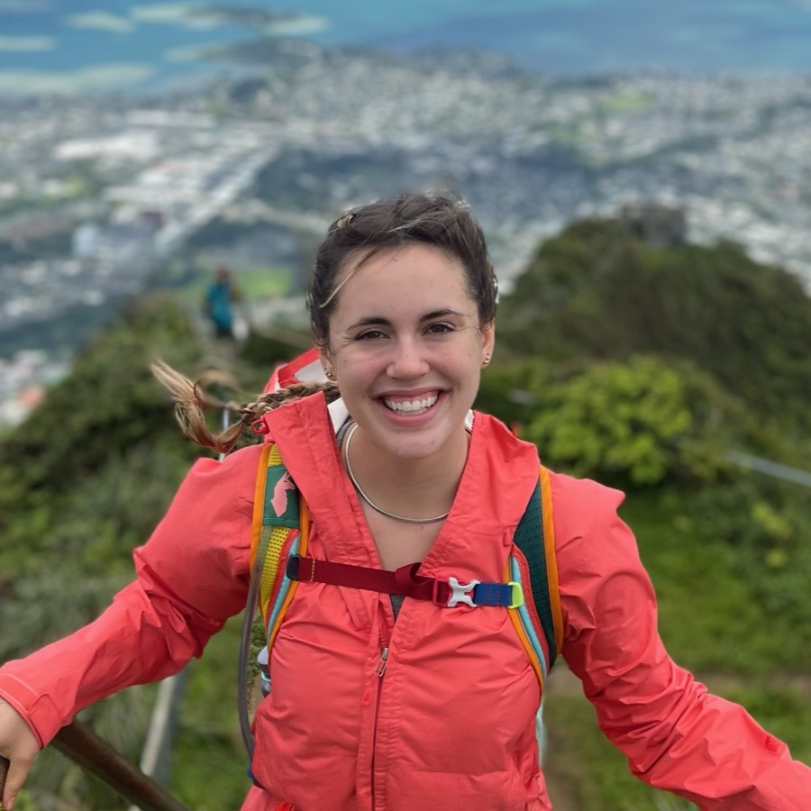
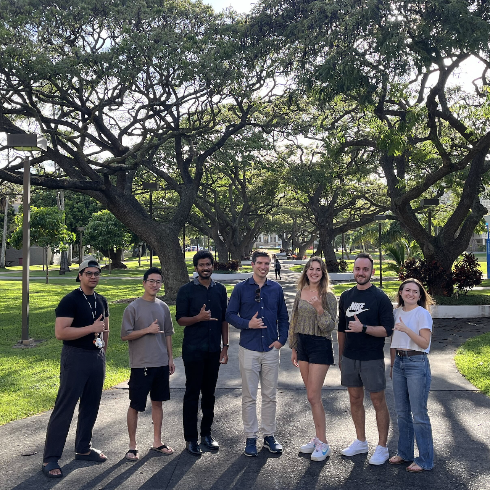

My name is Linnea Wolniewicz and I am a Computer Science Ph.D. Candidate at the University of Hawaiʻi (UH) at Mānoa researching the application of machine learning to scientific data. I advanced to candidacy in June 2026.
I am a part of Dr. Peter Sadowski's machine learning lab in the Information and Computer Science department at UH Mānoa. My research is in part funded by the National Science Foundation Graduate Fellowship (Grant No. 2236415). I received my M.Sc. from the UH Mānoa in Computer Science in August 2024 and my B.A. from the University of Colorado Boulder in Astrophysics in May 2022.
I am interested in using probabilistic machine learning to solve scientific problems, specifically in the context of astronomy, or more broadly AI for science.
From July to October 2026, I completed a research internship with NVIDIA's PhysicsNeMo/Earth-2 Teams in Santa Clara, California, developing generative satellite and radar weather models for climate science.
From March to June 2026, I was a Research Intern with the Machine Learning and Instrument Autonomy Group at NASA Jet Propulsion Laboratory, Caltech, in Pasadena, California, mentored by Dr. Umaa Rebbapragada. Building on my HelioLab research, I optimized deep learning architectures for ionospheric forecasting to reduce runtime and resource costs, and built evaluation pipelines across geomagnetic storm conditions.
Previously, I worked on ionospheric datasets and forecasting models at Frontier Development Lab's HelioLab (June–October 2025). My research also includes Neural Surrogate HMC, published in the Journal of Geophysical Research: Machine Learning and Computation in September 2026.
I am passionate about outreach, and serve as the Vice President and Outreach Coordinator of Graduate Women in Science Hawaiʻi. I organize exoplanet discovery workshops at High Schools around the state of Hawaiʻi to encourage young women to pursue careers in STEM.
In my free time I can be found climbing, hiking, or surfing the waves of Oʻahu. I have also studied the harp since I was eight years old and enjoy playing with orchestras when I have the chance.
You can read more about my journey to science and research in this interview with Katrina Shuping: AI Meets Astronomy: Linnea Wolniewicz's Exploration of Artificial Intelligence in Scientific Research.

